Currently BURRTOOLS handles cubic grids, grids that use prisms with a base shape that is an equilateral triangle, and tightly packed spheres. The spacegrid is used for all shapes within a puzzle, so you cannot have one shape made out of cubes together with one using another grid. The spacegrid needs to be set before you start with the puzzle. It cannot be changed later on. The gridtype is selected when you use the New option. Some gridtypes support setting some parameters of the grid, like scaling or skew. These parameters can be used to suppress certain orientations for shapes but, not to create new puzzle shapes.
Same for cubes: there might be a parameter that scales the cubes in y-direction. If that values differs from the x-direction value it will be possible to turn the cubes only by 180° when rotated around the x-axis.
The following chapters will explain some details regardins some of the available grids.
Actually there is just one important thing to know about the sphere grid: It has a relatively severe limitation. This limitation makes it impossible to properly handle shapes with disconnected units.
I don't want to go into too much detail here but the limitation comes from the fact that BT can only handle a finite number of symmetries.
Internally BT has a list of all possible transformation matrices that might transform a shape back onto itself, e.g the shape looks identical to the original untransformed shape. This list of transformations needs to be finite (and as small as possible, because longer lists make the program slower).
The sphere grid doesn't have this property. To display the problem let's assume we use the sphere grid in just 2 dimensions and use a square arrangement of spheres. We place one sphere at the origin and add 2 more spheres so that both of those additional spheres have the same distance from the sphere in the origin. If we now place one of the 2 spheres at coordinate (a;a) and the other at (a;-a) them both of them will have the same distance from the sphere in the origin.
The 3 spheres form a triangle with a right angle at the origin. This triangle has a symmetry axis which is a horizontal line from the origin. That means a rotation of 180 degrees around the axis y=0 will result in an identical looking triangle with the outer spheres swapped. This is one of the transformations mentioned above that BT has to check. (See Sphere Grid Problem left image)
If we now move the 2 outer spheres by one unit each. One to the right and the other down. Which results in those spheres at positions (a+1;a-1) and (a-1;-a-1). We again get a rectangular triangle of a slightly different size. This triangle again has a symmetry axis but this axis is slightly rotated clock wise. This would be a different transformation BT has to handle. (See Sphere Grid Problem right image)
You can imagine that there is an infinite number of possibilities to place the spheres, resulting in an infinite number of possible rotation axis and thus an infinite number of transformation matrices.
BurrTools can only handle a finite number of possibilities. I have limited those to the possibilities that you can encounter when you use only completely connected shapes. This problem only occurs because the sphere itself has an infinite number of possible rotation axes.
Connected in this context means that that it is possible to get from each sphere to each other sphere by just jumping from one sphere to the 12 possible neighbours and the further on via the neighbours.
Some of the unconnected shapes might be possible as well but there is no warrant, so if you want to be sure stay with "proper" sphere shapes.
This grid allows the modelling puzzles that have diagonally cut cubes, but more importantly it allows modelling a lot of rhombic dodecahedral based puzzles like Stewart Coffin designs.
The rhombic grid is much more intricate compared to basic grids like the cube grid. So please read this part of the manual thoroughly to avoid problems.
Many of the text below only talks about the rhombic based puzzles and indeed puzzles that just have diagonally cut cubes don't suffer the complexity but I still suggest to read on because it might shed some light on some not so obvious behaviour of the program.
Those variable voxels are a nice trick to see the inner structure of shapes.
The next important thing to know is how are these 24 tetrahedra managed. The picture below shows how it is done.
It can be seen that the 25 voxels of the rhombic grid are mapped onto a 5x5x5 cube of little cubes. Each tetrahedron is represented by exactly one cube.
Between those 24 cubes are 125-24 = 101 empty cubes that don't belong anywhere. It you ever do something manually and modify the grid directly you must take care to always leave those cubes empty or BURRTOOLS will crash. But as long as you only use the program it will take care that that doesn't happen.
Now given those basic units how to we build a rhombic dodecahedron from it?
The basic building blocks are basic units that Stewart Coffin used in his puzzle books to describe the shape of the pieces for his puzzles. This was necessary because of the limited information that can be given using 2 dimensional drawings. But those blocks are still useful to gain an understanding in the mechanics of the rhombic grid.
So let's start with the Rhombic Dodecahedron (RD). From that shape we can derive all other building blocks.
The rhombic dodecahedron is best built starting with a cube of size 2x2x2. That cube can be easily made my creating a 1x1x1 cube (24 voxels) and scaling is up by 2. Now "cut" away the outer corners of the cube so that all that is left is a diamond shaped square rod. Repeat the same process for the other axes. (More details in the RD-Tutorial)
Don't create the dodecahedron by adding 4 pyramids to the 6 sides of the 1x1x1 sized cube. Why that doesn't work is explained below.
If you rotate the rhombic dodecahedron so that you can see only a square can be seen and then remove 3 quarters of the square so that you get a square with halve of the length you will get a six-sided centre block. 6 Pieces of this block will nearly always be the centre of the puzzle. Other blocks will be "glued" to the faces of those 6 six-sided centre blocks.
Cutting up the block further will result in the other blocks like the 2 prism blocks, square octahedron, square pyramid, tetrahedral building block.
Have a look at the image blow. You can see 2 connected identical shapes. They are 2 diagonal star pieces. On the right image the voxels are also made variable to make the inner structure of the shapes visible. What can be seen is that both shapes do have the same outer appearance but a completely different inner structure.
This can only result in problems and it sure does. All building blocks down to the tetrahedral building block can be made in 2 different ways. BURRTOOLS will not be able to match those 2 ways to build a shape. If you make a problem with 2 shapes that are made those 2 different ways and choose one to be the piece and one to be the result you will get no solutions.
This all sounds like a severe problem but luckily it can be solved in a very simple way by scaling all shapes up by 2. The program will then make sure that all shapes are build the same way.
So keep in mind: When something doesn't work as expected or to make a final check of the results scale up by two and check again.
The key concept of BURRTOOLS is shapes. A shape is simply a definition of an object in 3-D space and consists of a collection of voxels (space units). These voxels in turn may have their own characteristics such as state and colour. Note that this definition also includes shapes made out of voxels that are attached to each other by only a single edge, just a corner, or even are completely separated in space. The solver certainly won't bother... but how these shapes could be crafted in the workshop is beyond the scope of the program.
All functions and tools for creating and editing shapes - once the grid type is set - are located on the Entities tab which has - from top to bottom - three main sections (Figure EntitiesTab):
The very first step is to draw the shapes that can be used in your puzzle design. All the tools to do so are just below the Shapes caption (Figure EntitiesTab). Clicking the New button starts a completely new shape with an empty grid, while Copy allows you to edit a previously entered shape without destroying the first. Obsolete and redundant shapes can be discarded with the Delete button.
All shapes are identified with an 'Sx' prefix. This prefix serves as a unique identifier for the shape throughout the GUI and cannot be removed or altered, but Label allows you to add a more meaningful name. Note that on the status line the shapes will be referred to only by their prefixes.
By clicking an identifier in the list, the shape becomes selected and ready to be edited. Also a short description of that shape appears on the status line. The currently selected shape is indicated with a white border around its identifier in the shapes list.
The buttons with the arrows pointing left and right allow you to change the position of the shape in the list. The first one moves the selected shape toward the front of the list, whereas the other button moves the shape toward the end of the list. Note that rearranging shapes will cause their prefix to change but not the additional name.
Unlike the pieces in PUZZLESOLVER3D, shapes don't need to be part of the puzzle. This means that you can build a file that contains a vast number of shapes, e.g. all 59 notchable six-piece burr pieces, of which you assign only 6 to the pieces of your puzzle design.
Finally, the shapes have an additional parameter: the weight. This value is used when constructing the disassembly animations. When the disassembler has found 2 groups of pieces that can be moved against each other it needs to decide which group to actually move and which to keep where it is. This decision can be influenced by the weight. The program searches the maximum weight in both groups and the one group that has the bigger maximum weight will be kept in place and the other group will be moved. If both groups have the same maximum weight the group with the smaller number of pieces will be used.
Since shapes are defined as objects in 3-D space, and theoretically 3-D space is unlimited in size, it's convenient somehow to be able to define a more feasible subspace to work with. This, and some more advanced scalings of the shapes, can be accomplished with the functions on the Size subtab (Figure SizeSubtab) of the Edit panel.
Note that the tab might look slightly different for different gridtypes. For example the sphere grid doesn't have the shape buttons as those are useless with that grid.
When the very first shape is initialised it has a default grid size of 6x6x6, but all other new shapes will inherit the grid size of the currently selected shape. This feature can be very useful in creating a series of shapes that are restricted with respect to certain dimensions (e.g. all pentacubes that fit in a 3x3x3 grid). Selecting the proper shape before creating a new one often can save a considerable amount of time by avoiding grid adjustments.
Adjusting the grid size to your needs can be done either by entering values in the input boxes next to the axis labels, or by dragging the spin wheels. When you enter values, the grid will be updated as soon as you select one of the other input boxes (either by a mouse click or by the [Tab] key), or when you press the [Return] key. Note that the grid is also updated by simply clicking in or next to the 2-D grid. To avoid unexpected results it's recommended always to confirm the entered values with the [Return] key. Increasing any grid dimension is completely harmless, but decreasing them needs some caution since it can destroy parts of the shape.
The checkboxes for linking adjustments - to the right of the spin wheels - allow you to adjust two or all dimensions simultaneously. All linked dimensions will increase or decrease by the same absolute amount. However, none of the dimensions can be made smaller than 1 unit. Linked dimensioning is very useful in creating bigger and complex shapes such as the result shape of NO NUKES! (Ronald Kint-Bruynseels), which is easily done by first creating the central burr in a 6x6x6 grid and adding the extensions after resizing the grid to 14x14x14 and centring the 'core' in that enlarged grid.
BURRTOOLS has some powerful time-saving functions to manipulate the position of the shape in its grid or to rescale a shape together with the grid. These features are grouped below the captions Grid and Shape on the right side of the Size subtab. The first set of three will affect only the grid and/or the position of the shape in the grid, the other procedures however will have an impact on the shape itself by scaling it up or down.
Below is an overview of these functions, explaining precisely what they do and with an indication of the reason they were introduced into BURRTOOLS. No doubt you'll soon find other situations in which these tools can prove to be valuable.
Grid tools. Most of these tools are somewhat extended versions of the more general transformation tools (→TransformationTool) and have the advantage that they can act on all shapes at once (→AdjustAllShapes).
| 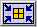 | Minimise the grid - This function will minimise the grid to fit the dimensions of the shape it contains. Use it to reduce the disk space occupied by your puzzle files. Note that the result of this function is strictly based on the contents of the grid and will have no effect whatsoever on empty grids. |
| 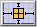 | Centre the shape in the grid - This function centres the shape in the surrounding grid thus allowing you to edit all sides of the shape. In some cases this will also increase one or more dimensions of the grid by a single unit to provide true centring. The function is most useful in editing symmetrical shapes in combination with the compound drawing methods (→CompoundDrawing). |
| 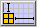 | Align the shape to the origin - This function brings the shape as close as possible to the origin of the grid. It can very useful if you want to make a descending series of rectangular blocks by copying the shape and manually adjusting the grid dimensions. |
Shape tools. Use the following functions wisely because unnecessary and extreme scaling up of the shapes will put a heavy load on your system resources and can increase solving time dramatically. Also, trying to undo such 'ridiculous' upscalings with the 1:1 tool can take a long time. So, think twice, click once...
These tools make sense only for spacegrids where a group of voxels can be grouped to make an upscaled shape that looks like a voxel of the grid, e.g. a group of 2x2x2 cubes looks like a bigger cube. As this doesn't work with spheres, these tools are not available there.
| 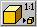 | Minimise the size of the shape (1:1 tool) - This function tries to make the shape as small as possible without any loss of information and at the same time scales down the grid by the same factor. Use this function to check the design for oversized shapes which would slow down the solver. Note that although this function can undo the effects of both of the next scaling functions, the result cannot be guaranteed since the algorithm may scale down beyond the initial size. |
| 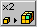 | Double the scale - This function will double the scale of the shape (and its grid). In other words, it will replace every voxel in the shape with a group of voxels that all have the same characteristics (state and colour) as the original voxel. This can be very useful to introduce half-unit notches or colouring into the design without having to redraw the shape(s). |
| 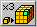 | Triple the scale - This function is similar to doubling the scale, only now a scaling factor of 3 is used and hence every voxel in the shape will be replaced by 27 identical voxels. This can be very useful if you want to introduce 'pins and holes' into your design. |
A last, but certainly not least, item to mention is the Apply to All Shapes checkbox. When checked, all shapes -- whether they are selected or not -- will be affected by the settings and procedures on the Size subtab. This is very useful and time saving when a certain adaptation needs to be done to all the shapes, e.g. transforming a six-piece burr with length 6 into one with length 8.
However, some precautions are built in to prevent accidental destruction of shapes. Manually reducing any grid dimension will still be performed only on the currently selected shape, whereas increasing (which is completely harmless to the shapes) will affect all grids. On the other hand, minimising the grids will be applied to all shapes since it is content related. The 1:1 tool won't affect any shape unless all shapes can be scaled down by the same factor. This prevents ending up with an unintended mixture of differently scaled shapes.
Once a shape has been initialised, the 2-D grid in which it can be built becomes accessible on the Edit panel. Basically one needs only three tools to create any shape, but some more features are added to make life easy. All these are on the toolbar right above the 2-D grid (Figure FigureToolbarGrid). The first four buttons are the basic drawing tools and colouring tool. These are all toggle buttons, meaning that enabling one will disable the others. They affect the presence and/or the state and colour of the voxels drawn by clicking in or dragging over the cells in the 2-D grid.
Next come two toggle buttons that allow you to select the drawing style. This is the way the basic drawing tools will respond to dragging the mouse over the grid cells. Finally, a series of compound drawing tools follows. These extend the range of the basic drawing tools and can all be cumulatively added to them.
Building and editing takes place almost exclusively in the 2-D grid, to which the 3-D viewport acts only as a visual aid. Both have their corresponding axes in the same colour: red for the x-axis, green for the y-axis and blue for the z-axis. For the 2-D grid, which actually can show only a single layer at a time, the z-axis is represented with a scrollbar (Figure FigureToolbarGrid). By default every new shape starts on the bottom layer and the scrollbar allows you to move up and down through the different layers along the z-axis (the number of z-layers is always indicated with the proper number of ticks along the scrollbar). Another way to navigate these z-layers is by pressing [+] (moves up one layer) or [-] (moves down one layer) on the keyboard.
Moving the mouse cursor over the 2-D grid gives an indication of the cell(s) - depending on the state of the compound drawing tools - that will be affected by clicking. These indications are also reflected in the 3-D viewer. Furthermore, to facilitate positioning on different layers every non-empty voxel on the 2-D layer just below the current one 'shines through' in a very light shade of the default colour associated with that shape (Figure FigureNavigation). This makes building shapes from bottom to top very easy.
With larger grid sizes the cells of the 2-D grid can become very small, even when the available area for the grid on the Entities tab is maximised. To overcome this inconvenience the 2-D grid and the 3-D viewport can be exchanged. To do so, click the Toggle 3D item on the menu bar or press [F4]. Note that this affects only the position of the 3-D viewport for the Entities tab.
The basic drawing tools affect the presence and/or the state of a particular voxel in the shape. In fact, together with the brush tool (→BrushTool) they are all that's needed to create any shape in BURRTOOLS. The following is a description of these tools. Note that each is also accessible through a keyboard short cut.
| Fixed pen - Use this tool to draw normal or fixed voxels. Fixed voxels are represented by completely filled cells in both the 2-D and the 3-D grid (→Representation). Remember that these fixed voxels must be filled in the final result. Keyboard short cut: [F5]. | |
| Variable pen - This tool allows you to draw variable voxels. In the 2-D grid these variable voxels do not completely fill the cells, but have a narrow border showing the background of the grid. In the 3-D viewport the variable voxels have a black inset (→Representation). Variable voxels instruct the solver that these particular places may be either filled or empty in the final result. So variable voxels are allowed only in result shapes, and the solver will give a warning whenever it encounters any variable voxels in a shape used as a piece. Short cut: [F6]. | |
|
Eraser - The eraser will remove voxels from the shape. Note that clicking or dragging with the right mouse button has the same effect of erasing voxels. The eraser tool however proves its use in minute adaptations of shapes. Short cut: [F7]. |
BURRTOOLS has two different drawing styles. These styles affect the way voxels are drawn/erased or colours are added by dragging with the mouse. In drawing shapes by simply clicking 'cell-by-cell' both are equivalent.
| Rectangular dragging style ('rubber band') - On dragging over the 2-D grid with the mouse, a rectangular selection of cells will be made. This is shown with a heavy border around the selected cells and the voxels will only be altered on releasing the mouse button. But releasing the mouse button outside the actual grid will make the whole operation void and can serve as a sort of 'undo'. This style is useful not only for drawing rectangular shapes or parts, but also for adding colour to (large areas of) the shape. | |
| 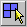 | Free dragging style - All drawing and colouring operations will be performed on a single cell basis and as soon as the mouse cursor is dragged over that particular cell. This drawing style is very useful for creating complex and irregular shapes and colour patterns. |
The status of these drawing styles is remembered by BURRTOOLS so that it always defaults to the drawing style that was active on the last shut down of the program.
Although the basic drawing tools are all that is needed for creating shapes, some compound drawing tools are added to speed up the process. The compound drawing tools can be added cumulatively to the basic drawing tools and only extend the range of action for the latter ones.
Note that these tools always function along the 3 orthogonal axes, so they are very useful for cubes but might need a bit of getting used to for the other spaces as they might behave differently along the 3 axes. The triangular prisms for example are stacked along the z-axis, side by side along the x-axis and tip by tip along the y-axis.
 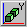
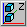
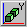
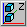 |
Symmetrical drawing methods - For every voxel drawn, erased, or coloured its symmetrically placed counterpart (with respect to the centre of the grid and along one of the space axes) will be affected as well. Activating only one of these options will double the number of edited cells, whereas activating two or all three will affect respectively four times and eight times as many cells simultaneously. These options are not only useful for drawing symmetrical shapes, but they are also very well suited for finding the centre of the grid and (temporarily) setting the extents of a shape. |
 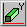
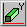
 |
Column drawing methods - These options - possibly combined with the symmetrical drawing tools - can really speed up drawing shapes as they will affect all voxels that are in the same row or column along one of the space axes. The number of voxels that will be affected depends on the size settings of the grid. Hence, to take fully advantage of these functions the grid should be first adjusted to the proper dimensions. |
It is also possible to do some editing using the 3- view directly by simply clicking onto faces to add the corresponding neighbour voxel. The following actions are possible:
There are basically two reasons for using colours in your puzzle designs. The first is merely aesthetic: colours are used only to explore the looks of the puzzle. This can help you selecting the proper species of woods or stains before taking your design to the workshop. The second however is far more important, as it uses colours to force or prevent certain positions of particular pieces in the assembly. These constraining techniques can be very useful to pursue a unique solution for a puzzle design. Of course one can try to achieve both the aesthetic and constraining goals at the same time. Figure FigureCustomColours shows an example of DRACULA'S DENTAL DISASTER (Ronald Kint-Bruynseels) in which colours serve both. The red and black voxels are meant to impose constraints on the placements of the pieces, whereas the white colour of the parts on the inside of the pieces is used only to make them look nice.
Even when no 'special' colours at all are used, the program assigns each shape its own different nominal color. This is the so-called default colour and is there only to distinguish the shapes from one another. These default colours are standard for each newly created shape (the first one in the shapes list is always blue, the second one green, the third one red, etc...) and cannot be altered.
As far as the solver is concerned, the default colour doesn't even exist, as all appearances of it are fully interchangeable. So any voxel in the pieces that has only the default colour can go into any voxel of the result shape, and every voxel in the result that has no other colour than the default can accommodate any voxel of the pieces, independent of its colour.
Independent from their default colour, voxels can have customised colours as extra attributes. To avoid confusion, it's recommended to make these colours well distinguishable from the default colours in use, since a custom colour that is identical to one of the default colours will have a completely different effect on the way the solver behaves. Almost without exception custom colours need some constraint settings (→ColourConstraints) to make the solver run.
The tools for creating and editing colours are located on the Colours panel of the Entities tab. This panel also has a list in which the colours can be selected to be used in the design or to be edited. The New button allows you to create a custom colour. A dialogue will pop up and present you the necessary tools to create the colour you need. Accordingly the Edit button allows you to transform an already existing colour using a similar dialogue. This dialogue also shows the currently selected colour for comparison (unless the default colour is selected, which makes the dialogue to show the default medium grey). Note that the default colour can be neither removed nor changed. It's important to realise that the BURRTOOLS engine discriminates custom colours only by number as indicated in their prefix 'Cx' and not by the actual colours themselves. Hence it is possible to create identical colours that nevertheless will be treated as different. So, it's strongly advised to introduce only colours whose difference can easily be discerned. Otherwise, finding out why a puzzle has no solutions can be very hard. The Remove button will not only discard the colour from the list, but will also remove it from any voxel that has it as an attribute by replacing it with the default colour.
When you add a colour, BURRTOOLS automatically adds a constraint rule that pieces of this colour can be placed into result voxels of this colour. This is done by default because it is the way colours are most often used. If you don't want this constraint you have to explicitly remove the rules (see →ColourConstraints). Also, when a new problem is created BURRTOOLS automatically adds one such rule for each existing colour.
Colours can be applied while drawing the shape. Just select a colour and it will become an extra attribute of the fixed pen or the variable pen. Additional colouring can be done by using the Brush tool.
 |
Brush tool - This is a 'colouring only' device and merely adds the selected colour to the voxels without altering their state. The brush tool can also be activated by pressing [F8] on the keyboard. |
The behaviour of this brush tool is similar to that of the drawing pens. So it obeys the drag styles and can be extended with the compound drawing tools. Note that the right mouse button will still completely erase the voxel.
Voxels can be either fixed or variable, and each of these can come with or without an additional custom colour. In BURRTOOLS all of these cases have their own specific representations in the 2-D grid as well as in the 3-D viewport. Figure Representation shows an overview of these possibilities. In this picture the default colour is red (= shape S3) and the custom colour is green (RGB = 0.600, 0.753, 0).
 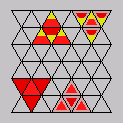
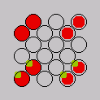
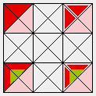
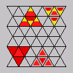
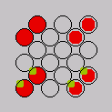
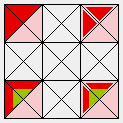Fixed voxels always fill the cell completely in the 2-D grid as well as in the 3-D grid. In all the pictures of Figure Representation the voxels on the left are fixed voxels. Variable voxels only partially fill the cell in 2-D and have a black inset in 3-D (the voxels on the right in Figure Representation).
Voxels that have a custom colour added (the yellow voxels in Figure Representation) show this colour as an inset in the 2-D grid, whereas in the 3-D viewer they are completely painted with this colour (provided that the Colour 3D View on the status line is checked, otherwise they will be painted in the default colour). Note that in both grids the default colours also have a slightly checkered pattern which can assist navigating in space (except for the spheres, which have no checkering).
Editing complex shapes can be very cumbersome and often requires a lot of navigating through the 2-D grid. So, properly positioning and/or orientating the shape in the 2-D grid can save a lot of time. BURRTOOLS comes with a set of functions that help you adjust the position and orientation of the shapes. These functions are grouped on the Transform subtab of the Edit panel (Figure TransformationTools). The first thing to see is that the transform tab looks quite different for all 3 available gridtypes. At the top of the figure you see the tab for cubes, below for triangles, and at the bottom for spheres.
|
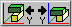 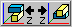 |
Flip - These 'three' functions are merely one single mirroring tool, the only difference is the orientation of the mirrored shape they provide. The first will mirror the shape along the x-axis (or in a plane through the centre of the grid and parallel to the YZ-plane). The others perform the same task, but along the y-axis (XZ-plane) or the z-axis (XY-plane) respectively. Note that each button can undo its own action as well as the actions of the other buttons, since the result of each function can be obtained by simply rotating the outcome of any other. However, there are three buttons to provide some control over the orientation of the mirrored shape in the grid space, which can save time if the shape needs further editing. |
|
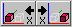 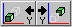 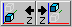 and more |
Nudge - These functions provide translations (along the x-axis, y-axis or z-axis for the cubes, or along different axes for other gridtypes) of the shapes in their surrounding grids. These buttons have two parts, of which the left part will shift the shape towards the origin of the grid and the right part will move it away from the origin. Note that shifting a shape beyond the boundaries of the grid will (partially) destroy it. So these nudging operations can also be used to erase unwanted parts on the outer limits of the shapes. |
|
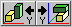 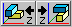 |
Rotate - These functions
allow you to rotate the shapes around an axis parallel to the
x-axis, y-axis or the z-axis. Again, these buttons have two parts, of
which the left rotates the shape 90 ° anti-clockwise (viewed towards the
origin) and the right button turns the shape 90 ° clockwise. To avoid
destroying shapes by rotating them, the grid may be rotated as well.
The triangle space has only one rotation button for the x and y-axis because it is possible to rotate only by 180 ° around these axes. |
The Tools subtab (Figure Tools) offers extra editing tools. Currently only some constraint related tools are available.

These tools are mass editing tools that have an impact on the possible placements of the pieces in the final result. They act either on the inside or the outside of the shape. Voxels that are considered to be on the inside are voxels that have another voxel adjacent to all of their faces. Consequently, outside voxels have at least one empty voxel neighbouring.
| 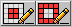 | Fixed Inside/Outside - These functions allow you to change the state of the voxels that are either on the inside (left button) or on the outside (right button) of the shape into fixed voxels. Although one can think of situations in which these can be useful as such, they are mostly used to undo the effects of the next two functions. |
 |
Variable Inside/Outside - These functions will respectively make all the voxels on the inside or the outside of the shape variable. Making the inside variable is very useful for puzzles with internal holes in undetermined places. On the other hand making the outside variable can be halpful in a lot of design situations (e.g. adding extensions to the pieces). Clicking both buttons will make the shape completely built out of variable voxels. Use these wisely as the more variable voxels there are, the slower the solver will run. |
 |
Colour Remover - These buttons will remove any custom colours from the voxels that are either on the inside or the outside of the shape, and replace them with the default colour. Removing the colour from the inside can prevent having to apply complex colouring to the result shape in situations were the colour constraints are relevant only to the overall appearance of the puzzle. |
Currently the shapes can only be rearranged with the left and right arrow buttons of the Shapes section, but more advanced management procedures will be added in the future.
When using the main menu entry Status a window (Figure WindowStatus) like the one above opens and displays all kinds of information about all the shapes available inside the puzzle. The table columns have the following meanings:
Because calculating all this information can take a considerable amount of time, BURRTOOLS pops up a window when it is working on accumulating this table. The window contains a progress bar to guess how much longer it will take. There is also a Cancel button at the bottom that lets you abort this calculation and view the results already gathered.
Below are some tips and tricks that can be useful to simplify your designs, speed up the designing and/or solving process, or can be used as workarounds for some limitations of BURRTOOLS. We encourage the reader to share his own tips and tricks with us so that we can incorporate them in a future update of this document.
It is possible to emulate spacegrids different from cubes by just using cubes. This way BURRTOOLS can solve different kind of puzzles. This section will give hints on how to such things. It will not contain obvious emulation possibilities like hexagons with 6 triangles or x by y rectangles using several squares, but rather some of the more complicated possibilities. The chapter cannot be complete but rather it wants to suggest what can be done and give you some initial ideas. If you come up with a cool idea you are welcome to send it to me and I will include it here.
Generally this emulation requires using N cubes for one basic unit. This will probably result in a slowdown of the solving process, but the slowdown is not always that grave. BURRTOOLS knows how to merge voxels that are always occupied by the same piece into one, so if there is for example a puzzle that uses hexagonal pieces made out of the triangular prisms and these hexagons are always aligned on a hexagonal grid, BURRTOOLS will merge the 6 triangles together and work with the resulting shapes. This takes some time only at the initialisation phase. On the other hand, there might be many placements of pieces that fit the underlying cube to triangle grid that are not proper placements and that need to be sorted out first. This can take a long time. MAJOR CHAOS by Kevin Holmes for example has a lot of illegal placements for pieces that need to be sorted out. That takes a very long time, but once that is done the solving is actually very fast.
If you have pieces that have a top and a bottom, there are several possibilities to model that in BURRTOOLS. One possibility is to use colours. Make the piece and the result 2 layers thick. The bottom layer of both will get a special colour.

Another possibility is to add an additional layer that has voxels only in certain places as seen in the picture. The additional voxel prevents the rotation of the shape. But you have to make sure that the allowed rotations are still possible, e.g. if you place the notches in different places rotation around the z-axis is also no longer possible. An example can be seen in Figure Emul2Sided
Cubes can be cut in many different ways, to approximate shapes such as given in Figure EmulDiagCut use the 2x2x2 cube displayed there.

It is, of course, also possible to simulate diagonally cut squares this way. The squares need to be 2 layers thick.
BurrTools can also handle half cubes with the Rhombic Grid. But that is more expensive because you need 24 units for a whole cubes while this emulation only needs 8 units for one cube.
Cairos are pentagons but luckily they have only 4 rotations, so it is possible to emulate them using squares. Figure EmulCairos demonstrates how that can be done.
To be done.
Sometimes it is possible to emulate edge matching problems by using notches and dents at the outside of the shapes.
As example let us have a look at a puzzle designed by Marcel Gillen: "Octopuz". This puzzle has pieces that are made out of 2 quatrominos. Those 2 quatrominos are connected to each other with a link and they can be turned so that in the end each piece has 4 possible shapes depending on how you rotate one halve against the other.
These shapes can be modeled using edge matching simply taking the shapes apart into their 2 halves, and colorize the touching sufaces of she 2 shapes of one piece with the same color and a different color for each shape.
To model such a color edge matching problem we need to scale up by at least 3. With this scaling we are able to add dents and grooves to the basic cube so that always 2 and only those 4 cubes match independent of the rotation of one cube relative to the other. Figure Edge mathing shows 5 possible such pairs of cubes. The 2 cubes in one column always are a matching pair.
There are many other shapes that can be emulated. As one example I will show 2 ways to emulate William Waites KNIT PAGODA (see Figure Pagoda1). Besides their shape the pieces have a top side and a bottom. Figure Pagoda2 shows 2 possible ways to emulate these pieces. Both shapes emulate the T-shaped piece seen on the bottom right.
It is quite easy to see how the pink shape works. It is constructed starting with a 3x3x1 square, and for each side adding a cube at the centre at the centre to represent eachside that bulged outward, and removing one cube for each side that bulges inward. Finally add a cube atop the centre of the 3x3 square to make it unflippable.
The second is quite a bit more complicated to understand. Here the starting point is a 2x2 square. A cube is added or removed for the bulges just as in the other case but those cubes cannot be in the middle. They are at one side so that the cube from an outer bulge can go into a gap created by an inner bulge. The resulting shape for one unit contains 4 cubes along a zig-zag line. You can see it by looking for the lighter cubes in the cyan shape above. This way has the additional advantage of avoiding flips because when the piece is flipped over the orientation of the bulges changes and the cubes do not mesh.